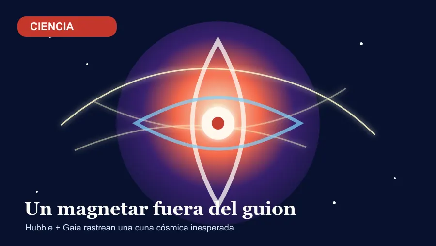

El plato del díaCiencia al límite

Ciencia al límite
El magnetar que pudo nacer sin supernova
Hubble y Gaia han señalado un magnetar de la Vía Láctea cuyo lugar de nacimiento ya no encaja con la supernova vecina.
Nivel de cuñado:
Leer el desarrollo
Ponme otra cosa